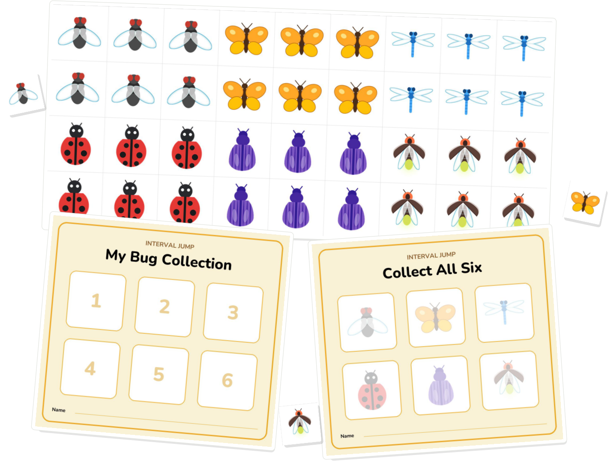

Free printable for music teachers
Catch a bug.
Collect it for real.
Printable sticker sheets and collection cards.

Free · no sign-up
beeskeysapp.com
Free printable for music teachers
Printable sticker sheets and collection cards.
